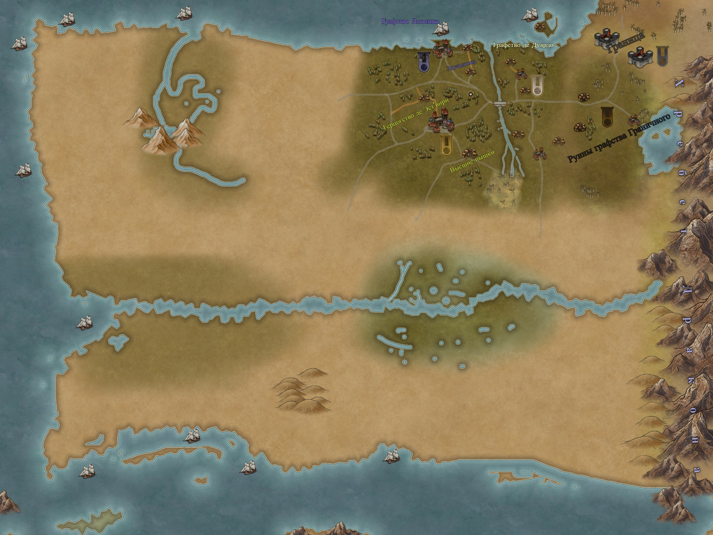

Графство Дуардо
- Правитель: Эдуард де Дуардо
- Герб: Клён на белом фоне
- Война: Латвинкс; Эст-Вирн
Южная Америка
- Площадь (кв.км): 17,840,000
- Население: 382,000,000
Европа
- Площадь (кв.км): 10,180,000
- Население: 731,000,000
Африка
- Площадь (кв.км): 30,370,000
- Население: 1,022,011,000
Азия
- Площадь (кв.км): 43,820,000
- Население: 3,879,000,000
Австралия
- Площадь (кв.км): 9,008,500
- Население: 31,260,000
Новая Гвинея
- Площадь (кв.км): 91,008,500
- Население: 31,260,000